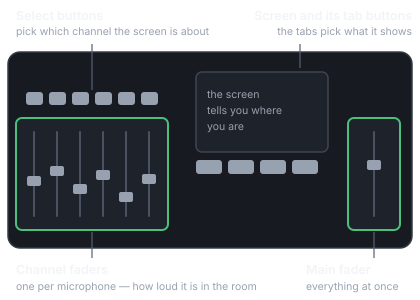
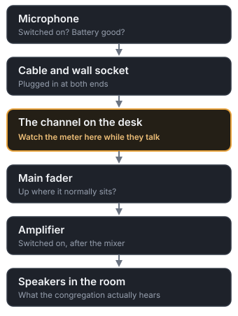

Element kit
Every piece the guide is built from, on one page, so a change can be judged before it lands in front of a volunteer. Not linked from the app — it is for whoever maintains the guide, not for a Sunday morning.
Station palette
The palette changes the chrome only — tab underline, timeline dots, icon wells, the language segment. Severity colours below are fixed across every station, because a “do not change this” card has to look the same everywhere.
station accent
safe
careful
do not change
done / live
Hero and station buttons
Sunday Booth Guide
Pick the station you are on. Everything for it is inside.
SoundThe mixing desk in the booth
MediaThe computer running the projector
LivestreamThe streaming computer and cameras
MiscQuestions about serving here
Station front page
SoundThe mixing desk in the booth
You make sure the room can hear what is happening on stage.
Interactive checklist
Collapsible step cards
-
45 min beforePower up
Turn on the mixer first, then the amplifiers. -
40 min beforeLoad the scene
Fill in the scene name as it appears on the desk.SCENES → select ____ → LOAD. Now and only now. -
DuringStay on HOME
Ride the faders. Do not load a scene now.
Questions
Can I break something by pressing the wrong button?
Almost certainly not. Nearly everything in the booth can be undone.
Do I need to understand what all these buttons do?
No. Faders, mute, and staying on HOME will get you through a normal Sunday.
Diagrams

Four areas, and that is the whole desk.

The meter splits the problem in half.
Cards, by severity
Safe
Home
This is the safe screen. This is where you should be during the service.
Careful
Gate
Already set up. If a microphone keeps cutting out, this is usually why.
Don't adjust it now. Tell the tech after the service.
Do not change
Config
Changing it will make the microphone stop working entirely.
Press HOME.
Tiles and the follow switch
Home · CH 3 — Pulpit